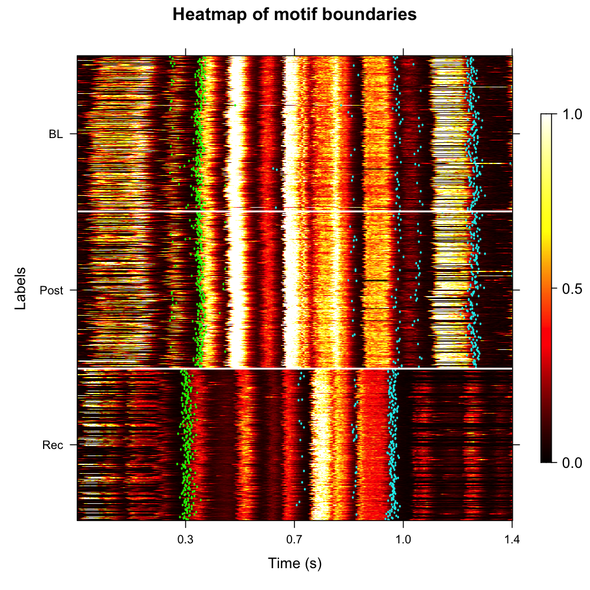
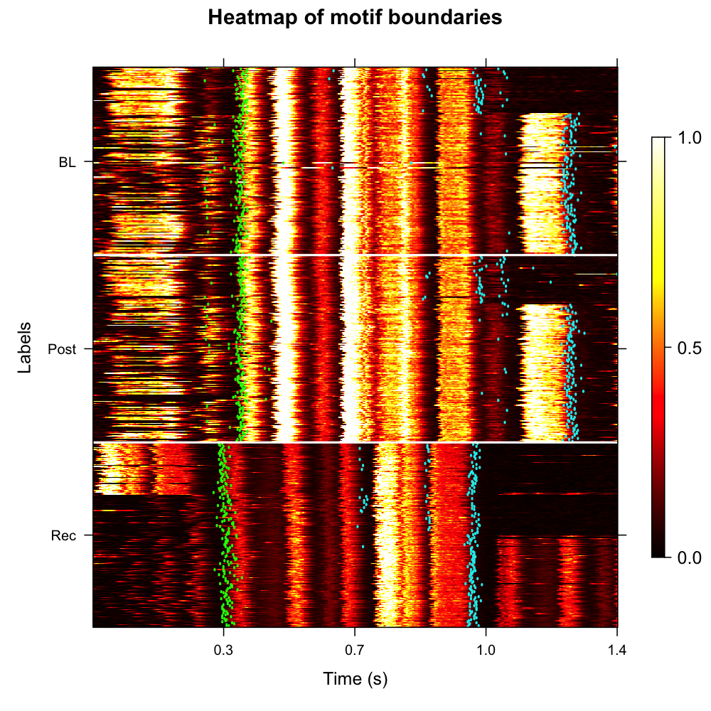
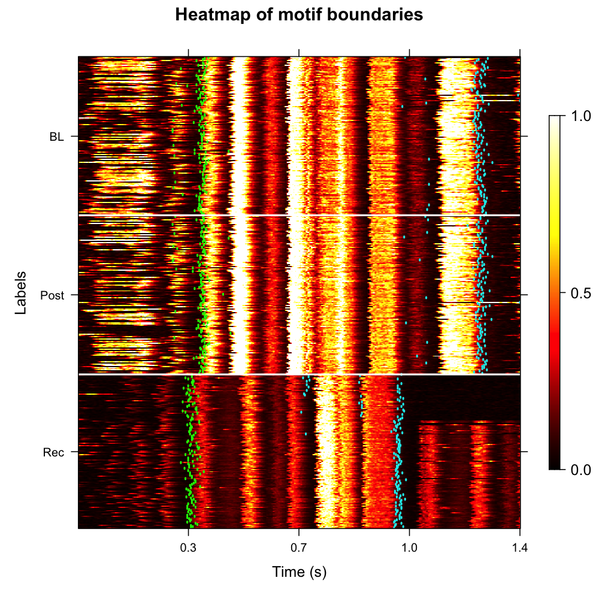

Identifying Motif Boundaries in Longitudinal Recordings
Source:vignettes/longitudinal_motif_boundaries.Rmd
longitudinal_motif_boundaries.RmdIntroduction
This vignette demonstrates how to identify precise motif onset and offset boundaries across longitudinal recordings by aligning coarse template-based motif windows to the underlying syllable segments detected in the previous pipeline stage.
Prerequisites: Before reading this vignette, we recommend completing:
- Overview: ASAP 101 — Basic ASAP functions
- Constructing a SAP Object — SAP object creation
- Longitudinal Motif Detection — Detecting motifs with template matching
-
Longitudinal
Syllable Segmentation — Segmenting bouts into individual syllables
(produces the
.rdsfile loaded here)
What you will learn:
- How to refine coarse motif windows into precise onset/offset
boundaries using
refine_motif_boundaries() - How to apply optional per-label time adjustments to handle developmental variability in motif length
- How to visualize the refined boundaries as an annotated
amplitude-envelope heatmap using
plot_motif_boundaries()
Overview
What is motif boundary identification?
Template-based motif detection (see Longitudinal Motif
Detection) locates motifs using a fixed time window —
pre_time seconds before the detection point and
lag_time seconds after it. These coarse windows often
include silence or partial syllables at either edge.
Why refine boundaries? Precise onset and offset times are needed for:
- Accurate duration measurements across developmental stages
- Aligned heatmap visualizations that do not smear syllable structure
How does it work?
refine_motif_boundaries() looks inside each coarse motif
window, finds the syllable segments (sap$segments) that
fall within it, and sets:
-
motif_onset= start time of the first syllable in the window -
motif_offset= end time of the last syllable in the window
The refined boundaries are stored back in sap$motifs
alongside the original start_time / end_time
columns, so nothing is overwritten.
Load a previously saved SAP object
This vignette continues from Longitudinal Syllable
Segmentation. Load the SAP object that was saved at the end of that
tutorial. It already contains detected motifs (sap$motifs),
detected bouts (sap$bouts), and — crucially — syllable
segments (sap$segments).
sap <- readRDS("longitudinal_syllable_analysis.rds")You can quickly verify that all the required components are present:
# Check motifs and segments exist
cat("Motifs: ", nrow(sap$motifs), "rows\n")
cat("Segments:", nrow(sap$segments), "rows\n")Motifs: 810 rows
Segments: 4213 rowsComplete Pipeline (copy-paste reference)
library(ASAP)
# Load SAP object from previous vignette
sap <- readRDS("longitudinal_syllable_analysis.rds")
# Refine motif boundaries using syllable segments
sap <- refine_motif_boundaries(sap)
# (Optional) Adjust start/end limits for specific developmental stages
sap <- refine_motif_boundaries(
sap,
adjustments_by_label = list(
BL = c(0.2, 0),
Post = c(0.2, 0),
Rec = c(0.2, -0.3)
)
)
# Visualize boundaries
plot_motif_boundaries(sap, balanced = TRUE)Refine motif boundaries
Basic usage
Call refine_motif_boundaries() on the SAP object. The
function reads sap$segments and, for every motif in
sap$motifs, finds the syllable segments whose
start_time falls within the motif window
(start_time … end_time). The onset of the
first such segment becomes motif_onset; the offset of the
last becomes motif_offset.
sap <- refine_motif_boundaries(sap)Applied end limit adjustments: none
Summary:
Motifs processed : 810
Motifs with boundaries identified: 809 (99.9%)
Motifs without boundaries (NA): 1 (0.1%)Inspecting the results
The refined boundaries are added as new columns to
sap$motifs:
head(sap$motifs[, c("filename", "label", "start_time", "end_time",
"motif_onset", "motif_offset", "motif_duration")]) filename label start_time end_time motif_onset motif_offset motif_duration
1 S237_42674.wav BL 1.035 2.235 1.135 2.162 1.027
2 S237_42675.wav BL 0.918 2.118 0.985 2.070 1.085
3 S237_42676.wav BL 1.122 2.322 1.210 2.195 0.985
4 S237_42677.wav BL 0.935 2.135 1.012 2.089 1.077
5 S237_42678.wav BL 1.087 2.287 1.147 2.215 1.068
6 S237_42679.wav BL 1.003 2.203 1.074 2.139 1.065| Column | Description |
|---|---|
start_time / end_time
|
Original coarse motif window from template detection |
motif_onset |
Start of first syllable inside the coarse window |
motif_offset |
End of last syllable inside the coarse window |
motif_duration |
motif_offset − motif_onset (precise duration) |
first_seg_index |
Selection index of the first syllable |
last_seg_index |
Selection index of the last syllable |
Visualize motif boundaries
plot_motif_boundaries() renders an amplitude-envelope
heatmap where each row is one motif. Two vertical markers are overlaid
per row:
-
Green line —
motif_onset(start of first syllable) -
Cyan line —
motif_offset(end of last syllable)
The amplitude envelope is computed with a
marginal_window of context added on both sides of the
coarse motif window, so you can see whether the boundaries land cleanly
at the edges of acoustic energy.
Key parameters
| Parameter | Role | Typical range |
|---|---|---|
balanced |
Draw equal numbers of motifs from each label |
TRUE / FALSE
|
sample_percent |
Percentage of motifs to plot per label | 10 – 100 |
max_samples_per_label |
Maximum number of motifs to randomly select from each label when
balanced = FALSE
|
50 – 500 |
ordered |
Sort rows by UMAP coordinates (requires run_umap() in
prior step) |
TRUE / FALSE
|
marginal_window |
Extra context (seconds) added to each side of the window | 0.05 – 0.15 s |
msmooth |
Smoothing parameters for the amplitude envelope
c(window, overlap)
|
c(256, 50) |
contrast |
Colour-scale contrast divisor | 2 – 5 |
clusters |
Integer vector — restrict to specific cluster IDs |
NULL (all) |
Basic boundary heatmap
plot_motif_boundaries(sap, balanced = TRUE)
Amplitude-envelope heatmap with motif onset (green) and offset (cyan) markers. Each row is one motif; labels (BL, Post, Rec) are separated by white horizontal lines.
Interpreting the heatmap
- Green and cyan lines aligned across rows → boundaries are consistent; the template window reliably captures the same syllables across renditions.
-
Scattered green/cyan lines → high variability in
boundary placement. Consider adjusting
silence_thresholdinsegment()or checking whether some recordings have poor signal-to-noise ratio. -
NA rows (missing lines) → no syllable segments were
found inside the coarse window for those motifs. Inspect those
recordings individually with
segment()on the raw file. -
Boundaries near the edges of the coarse window →
pre_time/lag_timeinfind_motif()may be too tight; or the motif template needs recalibration for that developmental stage.
Apply label-specific limit adjustments
Across development, motif duration and syllable timing can change: a
juvenile bird’s song may be slightly longer than the adult template
window, or its syllables may start earlier/later than the template. If
you notice that the first or last syllable of a particular developmental
stage is frequently cut off or captures too much context, you can adjust
the search window for that label using
adjustments_by_label.
The adjustments modify the start and end limits of the coarse search
window used by refine_motif_boundaries() (without modifying
the original start_time / end_time columns in
sap$motifs).
Each adjustment can be: 1. A single numeric value
(e.g., Rec = -0.3): adjusts only the end
limit (adds/subtracts time from the end). 2. A numeric
vector of length 2 (e.g., Rec = c(-0.05, -0.3)):
the first element adjusts the start limit, and the
second element adjusts the end limit.
Key parameter
| Parameter | Role | Value format / range |
|---|---|---|
adjustments_by_label |
Named list of adjustments by stage | Single value (end limit: -0.5 – 0.20 s) or length-2
vector (start and end limits) |
Tuning tips
-
First syllable is cut off at the start → add a
negative adjustment to the start limit (e.g.,
c(-0.05, 0)). -
Last syllable is missing at the end → add a
positive adjustment to the end limit (e.g.,
0.10). -
Too much context or trailing syllables captured →
subtract time from the end limit with a negative adjustment
(e.g.
-0.3to trim the end of the search window). -
motif_onsetormotif_offsetisNA→ no segments were found in the window. Check thatsap$segmentswas populated (run Longitudinal Syllable Segmentation first) and thatsilence_thresholdinsegment()was not too aggressive. -
Duration variability is high within a label → this
is normal for developing birds; use
ordered = TRUEinplot_motif_boundaries()to sort by acoustic similarity before interpreting the heatmap.
sap <- refine_motif_boundaries(sap,
adjustments_by_label = list(
BL = c(0.2, 0),
Post = c(0.2, 0),
Rec = c(0.2, -0.3) )
) Applied limit adjustments by label:
Label Start_Adjustment End_Adjustment
BL 0.2 0.0
Post 0.2 0.0
Rec 0.2 -0.3UMAP-ordered boundary heatmap
If you ran analyze_spectral() →
find_clusters() → run_umap() in the Longitudinal Syllable
Segmentation vignette, you can order motifs by their acoustic
similarity before plotting. This often reveals whether boundary
placement is consistent within each acoustic cluster:
plot_motif_boundaries(
sap,
balanced = TRUE,
ordered = TRUE, # sort by UMAP coordinates
descending = TRUE
)
UMAP-ordered boundary heatmap. Acoustically similar motifs are grouped together, making consistent boundary placement easier to verify.
Cluster-specific boundary heatmap
If you want to focus on a subset of acoustic clusters (e.g. to verify that a particular cluster has clean boundaries before downstream analysis):
plot_motif_boundaries(
sap,
clusters = c(0, 1), # only plot motifs in clusters 0 and 1
balanced = TRUE,
ordered = TRUE
)
Cluster-specific boundary heatmap showing only motifs in clusters 0 and 1, ordered by UMAP coordinates.
Summary statistics
After refining boundaries it is useful to summarise motif duration per developmental stage to confirm that the detected changes are biologically plausible:
sap$motifs |>
dplyr::group_by(label) |>
dplyr::summarise(
n = dplyr::n(),
mean_duration = round(mean(motif_duration, na.rm = TRUE), 3),
sd_duration = round(sd(motif_duration, na.rm = TRUE), 3),
pct_identified = round(mean(!is.na(motif_onset)) * 100, 1)
)# A tibble: 3 × 5
label n mean_duration sd_duration pct_identified
<chr> <int> <dbl> <dbl> <dbl>
1 BL 270 1.027 0.042 100
2 Post 270 1.082 0.089 99.6
3 Rec 270 1.041 0.061 99.6Sampling controls
For large longitudinal datasets, boundary refinement and boundary
heatmaps can be run on a controlled subset of motifs. Use
labels or clusters to focus on specific
groups, sample_percent to refine or plot a percentage from
each label, balanced = TRUE to draw equal counts across
labels, or max_samples_per_label to cap the number of
randomly selected motifs per label.
For example, this refines at most 100 motifs from each label while
leaving unselected motifs in sap$motifs with missing
boundary values:
sap <- refine_motif_boundaries(
sap,
max_samples_per_label = 100
)
plot_motif_boundaries(
sap,
max_samples_per_label = 100
)When balanced = TRUE, max_samples_per_label
is ignored because balanced sampling determines the per-label count
automatically.
Save the SAP object
After refining boundaries, save the updated SAP object so it can be used in downstream analyses (e.g. trajectory variability, UMAP occupancy):
saveRDS(sap, "longitudinal_motif_boundaries.rds")
# Reload later with:
sap <- readRDS("longitudinal_motif_boundaries.rds")What gets saved: - Everything from the previous
pipeline steps - Refined boundary columns in sap$motifs:
motif_onset, motif_offset,
first_seg_index, last_seg_index,
motif_duration
Important notes: - The original WAV files are
not included in the saved object - You must keep WAV
files at their original paths to re-run
plot_motif_boundaries() - The .rds file is
typically much smaller than the audio data
Session info
sessionInfo()
#> R version 4.6.1 (2026-06-24)
#> Platform: x86_64-pc-linux-gnu
#> Running under: Ubuntu 24.04.4 LTS
#>
#> Matrix products: default
#> BLAS: /usr/lib/x86_64-linux-gnu/openblas-pthread/libblas.so.3
#> LAPACK: /usr/lib/x86_64-linux-gnu/openblas-pthread/libopenblasp-r0.3.26.so; LAPACK version 3.12.0
#>
#> locale:
#> [1] LC_CTYPE=C.UTF-8 LC_NUMERIC=C LC_TIME=C.UTF-8
#> [4] LC_COLLATE=C.UTF-8 LC_MONETARY=C.UTF-8 LC_MESSAGES=C.UTF-8
#> [7] LC_PAPER=C.UTF-8 LC_NAME=C LC_ADDRESS=C
#> [10] LC_TELEPHONE=C LC_MEASUREMENT=C.UTF-8 LC_IDENTIFICATION=C
#>
#> time zone: UTC
#> tzcode source: system (glibc)
#>
#> attached base packages:
#> [1] stats graphics grDevices utils datasets methods base
#>
#> loaded via a namespace (and not attached):
#> [1] digest_0.6.39 desc_1.4.3 R6_2.6.1 fastmap_1.2.0
#> [5] xfun_0.60 cachem_1.1.0 knitr_1.51 htmltools_0.5.9
#> [9] rmarkdown_2.31 lifecycle_1.0.5 cli_3.6.6 sass_0.4.10
#> [13] pkgdown_2.2.1 textshaping_1.0.5 jquerylib_0.1.4 systemfonts_1.3.2
#> [17] compiler_4.6.1 tools_4.6.1 ragg_1.5.2 bslib_0.11.0
#> [21] evaluate_1.0.5 yaml_2.3.12 otel_0.2.0 jsonlite_2.0.0
#> [25] rlang_1.3.0 fs_2.1.0